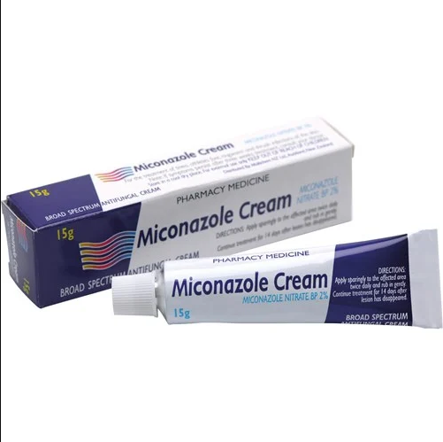
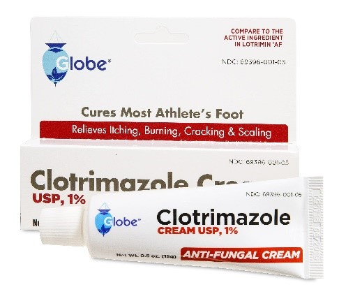

Infeksi Jamur
Infeksi jamur dapat dialami oleh siapa saja, terutama orang yang tidak memedulikan kebersihan diri. Selain itu, orang dengan daya tahan tubuh lemah juga berisiko terkena infeksi jamur, seperti penderita HIV/AIDS, pasien kemoterapi, serta pasien yang baru menjalani transplantasi organ. Infeksi jamur pada manusia paling sering terjadi di kulit. Namun, infeksi jamur juga dapat menyerang bagian tubuh lain, seperti bagian rongga mulut, mata, serta telinga.
- Gejala : Gejala mikosis dapat berkisar dari ringan hingga sangat serius. Gejala yang tepat tergantung pada jenis jamur yang menyebabkan infeksi. Beberapa gejala umum seperti; Gejala mirip asma, Kelelahan, Sakit kepala, Nyeri otot atau nyeri sendi, Keringat malam, Penurunan berat badan, Sakit dada, Kulit gatal atau bersisik, dan Gejala juga bergantung kepada letak terjadinya infeksi dan jenis jamur yang menginfeksi
- Penyebab :
- - Mikosis superfisial, terdapat 4 penyakit yaitu: 1. Dermatofitosis yang disebabkan oleh Microsporum, Trichophyton, dan Epidermophyton, dengan bentuk pertumbuhan Bentuk berfilamen, 2. Pitiriasis versikolor atau infeksi kulit melalui Malassezia yang disebabkan Malassezia dengan bentuk pertumbuhan Yeast dan bentuk berserabut, 3. Tinea nigra atau keratomycosis nigrican palmaris dan Tinea pedis yang disebabkan oleh Exophialia (Phaeoanellomyces) wernekii dengan bentuk pertumbuhan Bentuk filamen (berpigmen), 4. Onikomikosis yang disebabkan oleh Microsporum, Trichophyton, Epidermophyton dll. Dengan bentuk pertumbuhan Bentuk berfilamen.
- - Mikosis kulit dan subkutan, terdapat 3 penyakit yaitu: 1. Misetoma (Eumikotik) yang disebabkan oleh Grain putih: Acremonium falciforme, Aspergillus nidulans, Fusarium moniliforme, pseudallescheria boydii dll. Grain hitam: Chaetosphaeronema larense, Medurella grisea dll. Dengan bentuk pertumbuhan berfilamen, 2. Kromoblastomikosis yang disebabkan oleh Fonsecaea pedrosoi, Cladophialophora carrionii, dll. dengan bentuk pertumbuhan sel muriform dan bentuk berserabut, 3. Sporotrichosis yang disebabkan oleh Sporothrix schenckii dengan bentuk pertumbuhan yeast.
- - Mikosis sistemik, terdapat 4 penyakit yaitu: 1. Histoplasmosis yang disebabkan oleh Capsulati Histoplasma capsulatum var capsulatum dengan bentuk pertumbuhan yeast, 2. Blastomycosis yang disebabkan oleh Blastomyces dermatitidis dengan bentuk pertumbuhan yeast, 3. Koksidioidomikosis yang disebabkan oleh Coccidioides immitis dengan bentuk pertumbuhan Endospora, 4. Paracoccidioidomycosis yang disebabkan oleh Paracoccidioides brasiliensis dengan bentuk pertumbuhan yeast.
-
Pengobatan Konvensional
Miconazole Cream
- Kandungan : Miconazole nitrate 2%
- Dosis/cara penggunaan : Oleskan 2 kali per hari selama 2 sampai 4 minggu
- Indikasi : Krim ini digunakan secara topikal atau pada membran mukosa untuk mengatasi infeksi yang disebabkan oleh fungi, atau digunakan pada terapi Tinea Pedis (kaki atlet), Tinea Kruris dan Tinea Korporis; Flokosum; Kandidiasis Kutaneus (Moniliasis); dan Tinea Versikolor
- Kontraindikasi : Alergi atau hipersensitivitas
- Efek samping : Sensasi rasa terbakar, dermatitis kontak
- Peringatan & perhatian : Hanya untuk bagian luar badan. Hindari kontak langsung dengan mata. Hentikan penggunaan jika terjadi iritasi. Hamil dan laktasi. Kategori Kehamilan : Kategori C: Mungkin berisiko. Obat digunakan dengan hati-hati apabila besarnya manfaat yang diperoleh melebihi besarnya risiko terhadap janin. Penelitian pada hewan uji menunjukkan risiko terhadap janin dan belum terdapat penelitian langsung terhadap wanita hamil.
- Penyimpanan : Simpan di tempat yang kering dan terhindar dari sinar matahari; Pada suhu ruang 15º – 25º C; Jauhkan dari jangkauan anak-anak.
Clotrimazole
- Kandungan : Clotrimazole 1%.
- Dosis/cara penggunaan : Oleskan krim dengan kandungan clotrimazole 1% sebanyak 2–3 kali sehari, selama 2–4 minggu.
- Indikasi : Clotrimazole termasuk dalam antijamur golongan azole yang bekerja dengan cara merusak struktur membran sel jamur. Dengan begitu, pertumbuhan jamur dapat dihentikan.
- Kontraindikasi : pasien dengan riwayat hipersensitivitas
- Efek samping : Sensasi terbakar atau perih pada kulit, Kulit berubah menjadi kemerahan dan terasa sakit saat disentuh, Kulit mengelupas, Iritasi dan gatal.
- Peringatan & perhatian : Penggunaan clotrimazole oral dapat menyebabkan efek samping berupa peningkatan hasil tes fungsi hati dan aminotransferase aspartate, terutama pada pasien yang sudah memiliki gangguan fungsi hati. Clotrimazole hanya digunakan pada infeksi jamur lokal dan bukan yang bersifat sistemik.
- Penyimpanan : Simpan obat clotrimazole pada suhu kamar jauh dari kelembapan dan panas matahari setelah digunakan.
-
Pengobatan Herbal
Lidah Buaya (Aloe vera)
- Kandungan : Lidah buaya memiliki kandungan saponin dan senyawa ancemnnan. Senyawa tersebut memiliki menfaat yaitu sebagai antijamur. Aloe vera juga memiliki kandungan diantaranya saponin, kuinon, lupeol, nitrogen urea, tanin, aminoglukosida, fenol, sulfur, asam sinamat, asam salisilat, minyak atsiri, flavonoid juga dapat berfungsi sebagai antimikroba.
- Cara penggunaan : Oleskan gel lidah buaya langsung ke kulit yang terinfeksi dan lakukan minimal 3 kali sehari.
Kunyit (Curcuma longa)
- Kandungan : Kandungan senyawa yang bermanfaat dalam kunyit diantaranya adalah minyak atsiri, pati, resin, selulosa, kurkuminoid dan beberapa mineral. Senyawa-senyawa tersebut sebagai antiinflamasi, antioksidan, antibakteri dan antifungi.
- Cara penggunaan : Oleskan pada bagian kulit yang terinfeksi jamur dan diamkan beberapa menit.
- Cara pembuatan : Haluskan kunyit lalu campurkan sedikit dengan air dan atau minyak kelapa